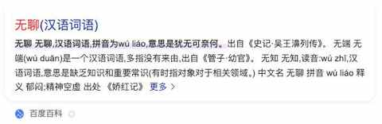
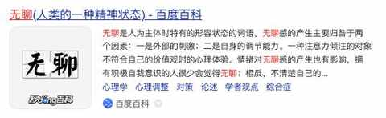
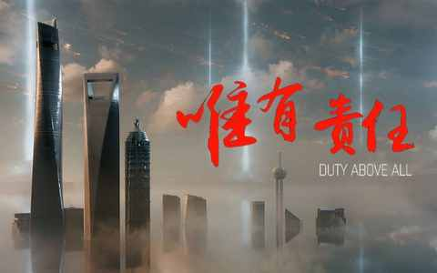
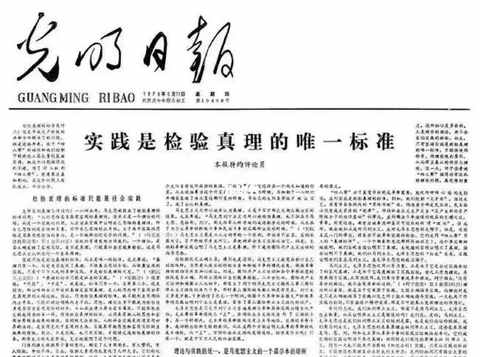
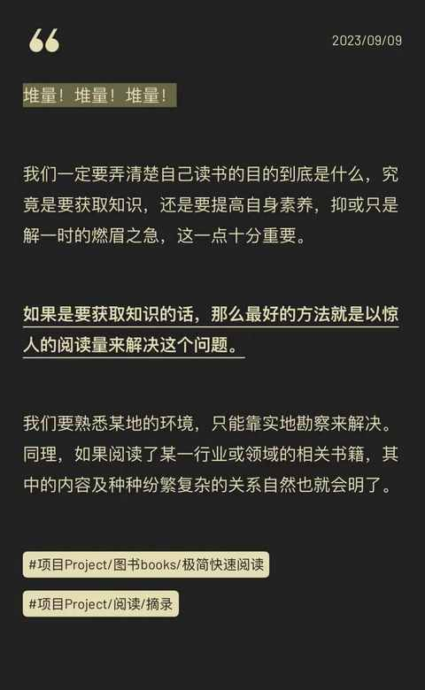
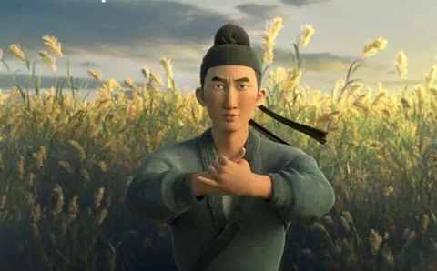
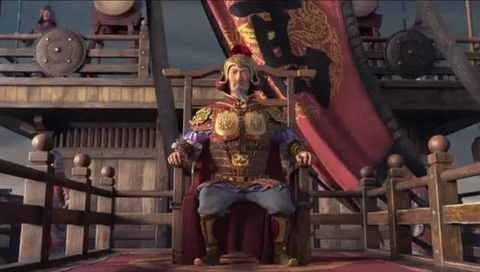
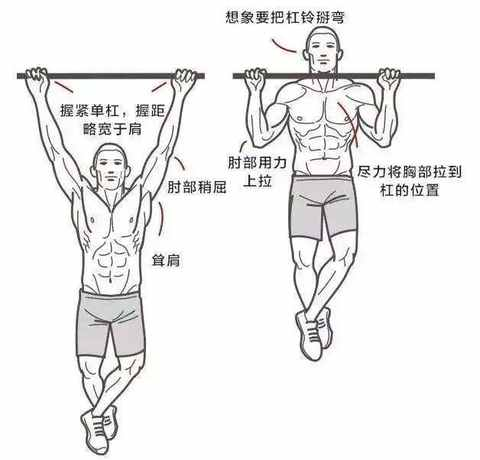

当中年男人不知道做什么的时候……
现在很多幼儿园的小朋友已经会了一个词：无聊。
但小孩子的无聊很容易被解决，玩会儿玩具、看会儿电视、出去找小伙伴玩玩都能让小朋友瞬间忘却刚刚的无聊感。
相较而言，成年人的无聊就更普遍且难排解多了，而且还有可能会上反诈新闻，尤其是在夜深人静的时候。
关于无聊的解释，百度里面有完整的释义，当下提到无聊大多都是描述一种精神状态，不知道做什么或者什么都不想干。


如果拿这些定义去对应我最近2 年多的状态的话，可以表述为：大部分时候并不无聊，但并不知道做什么。
再具体点就是： 不知道要all in 去做的事情是什么。
刚开始很不适应这种状态，好比每天晚上都能看到的北极星突然就被一片云遮住，怎么找也看不到。
好在当下已完全适应，这种状态可能就是每个人都必须要经历，要走出来，因为个体差异，每个人需要的时间和时机都不一样。
目前的解法主要围绕两个点： 保持赚钱+强身健体！
一、保持赚钱：
同时要不断增加赚钱能力，寻找机会
1. 基于责任
上有老下有小的中年男人不能摆烂更没有资格躺平， 虽然有过类似想法，但想法刚出现就被掐掉。

2. 勇敢实践
通过逐步的实践发现做 A 工作的能力是可以应用于 B 工作，不是平移，是一种耦合

3. 持续观察
虽然各种信息都是说，大环境不好等等，但还是会有人能通过自身的不懈努力赚到钱
4. 迷之自信
并没有特别的理由，就觉得是走在正确的路上，当下是磨刀不误砍柴工，将来某一天就能有所收获
5. 加量输入

有踩过这些坑：
1. 购买各种并不需要的课程
- 优质的课程是极少数
- 是一次消费行为，买了从来不看
2. 加入过多的社群和知识星球
- 信息过多，看不完且增加焦虑感
- 微信群和知识星球的阅读体验都不好
二、强身健体：
同时找到适合的饮食和作息节奏
1. 两年两次手术
分别是2022 年 2 月的耳膜修复手术和 2023 年 4 月眼眶骨折修复手术，虽说都是微创恢复的快，但都需要住院都需要周期性复查，都需要频繁的出入医院，对「身体是革命的本钱」这句话的理解愈加深刻。
2. 《长安三万里》中的高适

高适有能力但怀才不遇，49 岁投奔哥舒翰，52 岁官拜左拾遗，53岁跟随唐玄宗入蜀。

当时看电影的时候没有反应过来，晚上看影评的时候回过神来：有一副好身体的是多么重要。
当被命运之神眷顾，也得接得住给予到的机会。
3. 好的生活习惯能受益终生
规律作息，非必要不熬夜
合理饮食，食物多样化
保持运动，有氧无氧都试试
4. 认清现实
无法完成引体向上，与健身房的器材无关，外部环境无关，只在于你自身是否有足够的技巧和力量

借用国外流行的 gap year 的概念 ，可能人人都需要时间去上下求索，这是每个人都会遇到的课题，是一篇必须完成的命题作文：当不知道做什么的时候去做些什么。